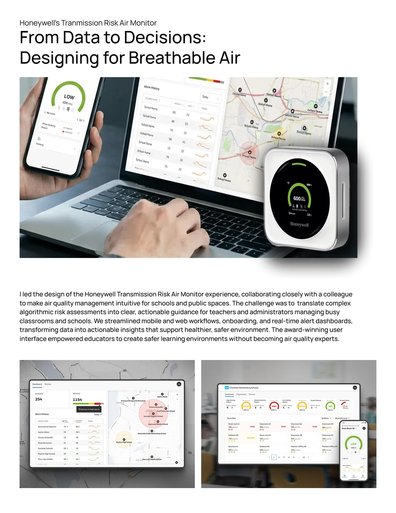
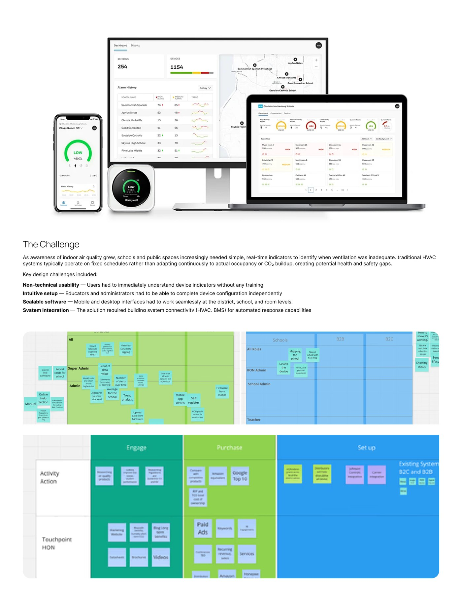
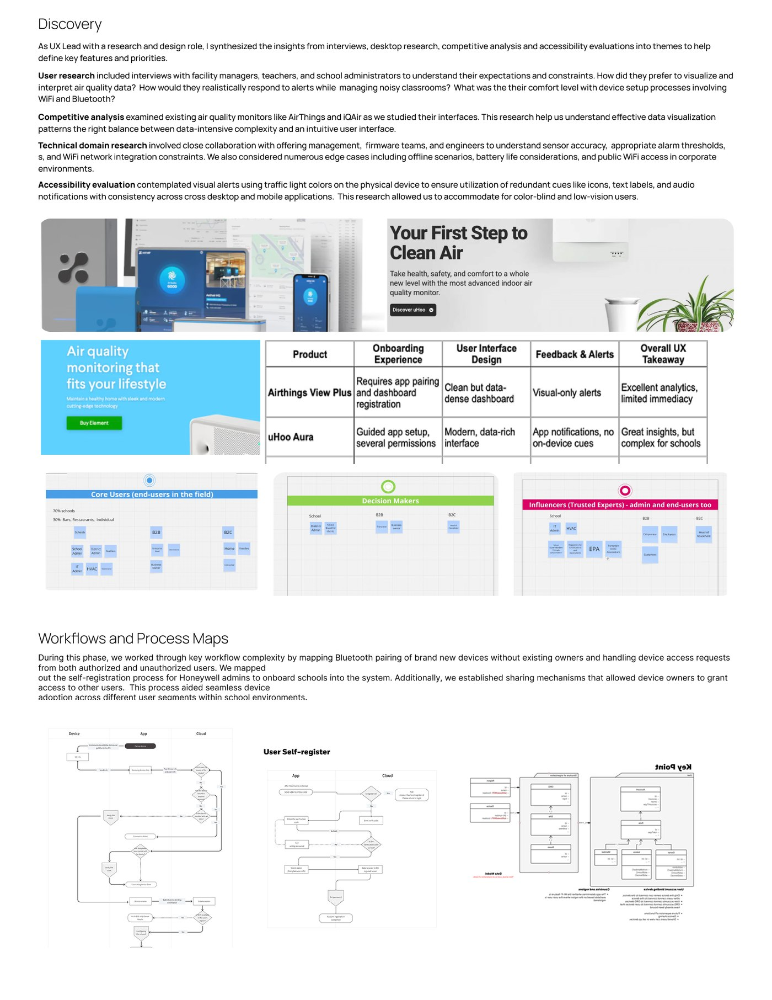
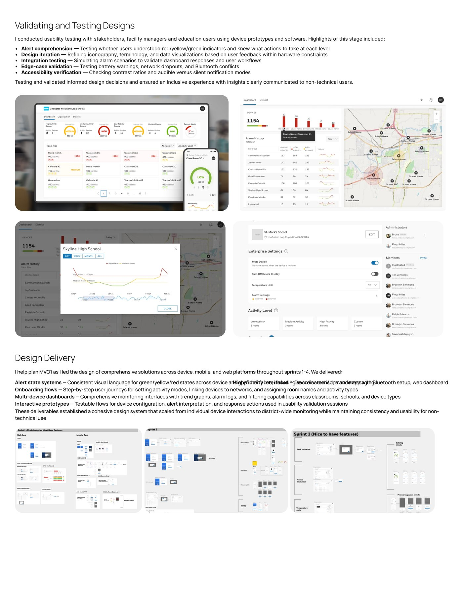
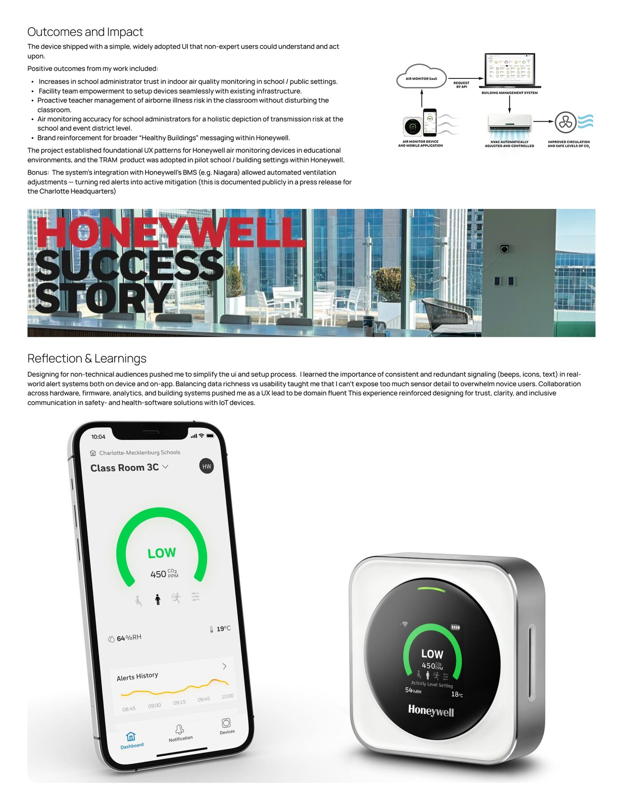

Honeywell · iF Design Award 2022 · IoT · Mobile & Web
Transmission Risk Air Monitor
From data to decisions: designing for breathable air. An award-winning air quality experience that helps schools and public spaces turn complex algorithmic risk assessments into clear, actionable guidance.
Overview
I led the design of the Honeywell Transmission Risk Air Monitor experience, collaborating closely with a colleague to make air quality management intuitive for schools and public spaces. We streamlined mobile and web workflows, onboarding, and real-time alert dashboards — transforming data into actionable insights that support healthier, safer environments. The user interface received an iF Design Award in 2022 and empowered educators to create safer learning environments without becoming air quality experts.




